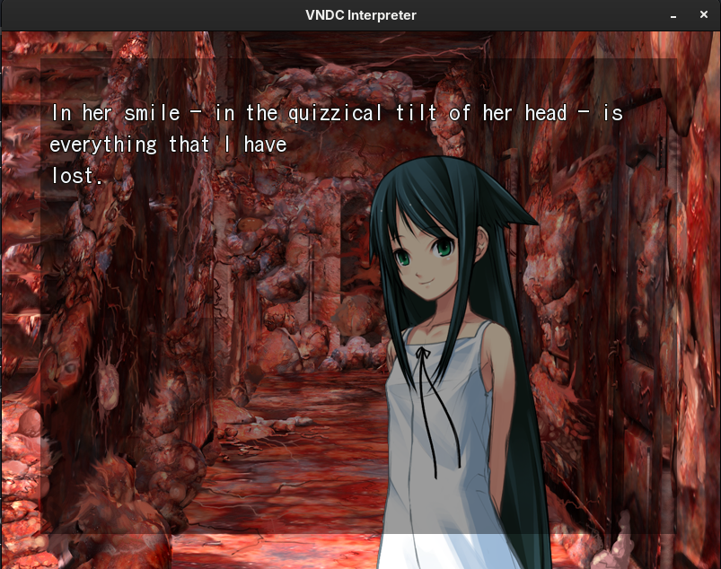

VNDC-Next
Description
Vndc-next is a desktop reader for Visual Novels in the VNDS format. It is a fork of chaoskagami code, updated to modern libraries and with added features (Such as zip support).
tl;dr - To install, do the standard autotools dance, e.g. ./autogen.sh && ./configure && make -j4 && make install
For generic platforms you need: SDL2, SDL2_mixer, SDL_image, SDL_ttf, and libarchive development files (for ZIP support).
make builds vndc in the repository root; make install installs it in the configured bin directory. Run ./vndc -h if you don’t know how to run it. Have VNDS files ready. This includes foreground, sound, background, script, and optionally default.ttf.
VNDS games can use extracted asset directories or separate archives (script.zip, foreground.zip, background.zip, and sound.zip). You can also pass a whole-game archive with -d path/to/game.zip; it is extracted to a temporary directory and removed when VNDC exits. If an extracted directory and its matching ZIP are both present, VNDC uses the directory. For example, background/ takes precedence over background.zip, and game/ takes precedence over game.zip.
A picture says a thousand words. Here is one screenshot of it running The Song of Saya.

Click, Space, or Enter advances text; use the arrow keys and Enter for choices. Hold Ctrl to skip text and background fades; it always stops at choices. H hides the text overlay, A toggles auto-advance, B opens the backlog, Esc opens the pause menu, and F11 toggles fullscreen.